Lec 10: Indexing⚓︎
约 12632 个字 18 行代码 预计阅读时间 63 分钟
核心知识
- 顺序索引：稠密 / 稀疏索引、多级索引、插入 / 删除、二级索引
- B+ 树索引
- 数据结构
- 插入（分裂
） 、删除（合并） - 复杂度分析
- B+ 树文件组织
- 一些优化方法
- 哈希索引
- 索引的 SQL 语法
- 位图索引
数据库系统中的索引(indices) 由表中部分组织好的或排好序的列构成，用于高效访问数据库的内容。DBMS 能够确保表格内容和索引在逻辑上是同步的。
数据库中会经常用到以下两类基本的索引：
- 顺序索引(ordered indices)：基于排序后的值
- 哈希索引(hash indices)：基于值在一些桶 (buckets) 里的均匀分布，值被分配到的桶是由哈希函数决定的
我们先回介绍顺序索引用到的一些技术，这些技术没有最好的，各自都有适用的地方。可以用以下指标来衡量这些方法：
- 访问类型：包括寻找带有指定属性，或者指定属性值范围的记录
- 访问时间：寻找单个或多个数据项所需的时间
- 插入时间：包括寻找新数据插入的正确位置，以及更新索引结构所需的时间
- 删除时间：包括寻找要被删除的数据项，以及更新索引结构所需的时间
- 空间开销：索引结构占据的额外空间，假如该空间不大的话，那么值得用这点空间换取性能的提升
单个或多个用于查找文件内记录的属性被称为搜索键(search key)，每一个索引对应一个特定的搜索键。
Ordered Indices⚓︎
顺序索引(ordered indices) 按排好的顺序存储搜索键的值，并和每个被记录包含的搜索键关联起来。而这些记录也有可能是按顺序排序的。如果是由搜索键定义文件内的顺序的话，那么称对应的索引为聚集索引(clustering index) 或一级索引(primary index)，而对应的文件被称为索引顺序文件(index-sequential files)。通常，聚集索引的搜索键是一个主键（但也可能不是
Dense and Sparse Indices⚓︎
一个索引项(index entry) 或索引记录(index record) 是由搜索键值，以及指向具有和搜索键值相同值的一条或多条记录构成的。而这个指针包含了硬盘块的标识符，以及硬盘块内的偏移量，用于识别块内的具体记录。
顺序索引可分为以下两类：
-
稠密索引(dense index)：对于文件内的每个搜索键值都有对应的索引项
-
在稠密聚集索引里，索引记录包含了搜索键值和指向第一条带有该搜索键值的记录的指针，而其余具有相同搜索键值的记录就按顺序排在这第一条记录的后面

-
在稠密非聚集索引里，索引必须将全部指向带有相同搜索键值的记录的指针存储在列表里
-
-
稀疏索引(sparse index)：文件内只有部分搜索键值有对应的索引项
- 此时只允许聚集索引
- 每个索引项包含了搜索键值和指向第一条带有该搜索键值的记录的指针
- 为了找到记录，就要找到小于等于我们要找的搜索键值中最大的搜索键值对应的索引项。然后从这条记录出发，顺着指针在文件中寻找，直到找到想要的记录
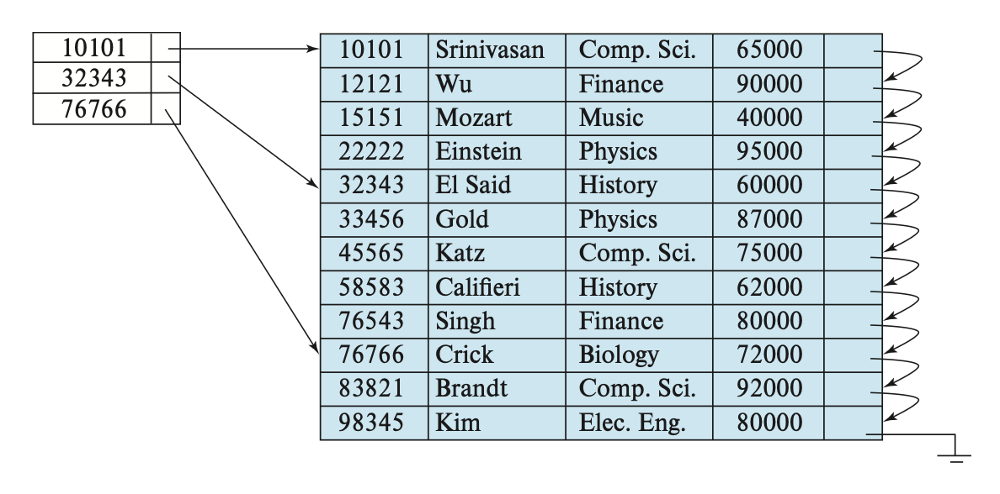
这种设计中，处理数据库请求的主要成本是将数据块从硬盘带到主存所需的时间。如果索引小到能够放入主存的话，那么搜索的时间就会降低不少。
Multilevel Indices⚓︎
当索引很大的时候，查找索引的过程就特别耗时间。为了解决这个问题，我们可以将索引看作文件中的记录，然后为这个索引构建一个稀疏索引。其中原来的索引称为内部索引，而新构建的索引称为外部索引，如下所示：

要找到某条记录，我们现在外层索引上使用二分查找，找到不超过该记录的搜索键值的最大搜索键值对应的记录，对应有一个指向内部索引块的指针。然后在这个内部索引块内找到不超过该记录的搜索键值的最大搜索键值对应的记录，对应有一个指向文件块的指针，这个文件块包含了我们想要寻找的记录。
当索引变得很大很大时，我们可以使用更多级的索引，这称为多级索引(multilevel indices)。相比只用二分查找而言，在多级索引上寻找记录能够显著减少 I/O 操作。
Index Update⚓︎
Insertion⚓︎
- 首先，系统通过搜索键找到插入记录的地方
- 然后根据不同类型的索引采取不同操作
- 稠密索引：
- 如果搜索键值不出现在索引里，那么系统将在合适的位置上插入一个带有该搜索键的新索引
- 否则的话，
- 如果索引项存储了指向所有带有相同搜索键的记录的指针，那么系统将在索引项中添加一个指向新记录的指针
- 否则的话，索引只存储指向第一个带有该搜索键的记录的指针，此时系统将新记录插入到和它搜索键值相同的记录后面
- 稀疏索引：
- 假设索引为每个块存储一个项。如果系统创建了新的块，那么就将新的块中得到的搜索键值放入索引中
- 如果新记录的搜索键值在块内是最小的话，那么系统就讲索引的入口更新到该块上；如果不是的话就不做改动
- 稠密索引：
Deletion⚓︎
删除过程和插入类似：
- 首先，系统要找到要被删除的记录
- 然后根据不同类型的索引采取不同操作
- 稠密索引：
- 如果被删除的记录是搜索键值对应的唯一的记录，那么系统将删除掉对应的索引项
- 否则的话，
- 如果索引项存储了指向所有带有相同搜索键的记录的指针，那么系统将删除指向被删除记录的指针
- 否则的话，索引只存储指向第一个带有该搜索键的记录的指针，此时系统将更新索引项，让它指向下一条记录
- 稀疏索引：
- 假设索引为每个块存储一个项。如果系统创建了新的块，那么就将新的块中得到的搜索键值放入索引中
- 否则的话，
- 如果被删除的记录是该搜索键对应的唯一记录，那么系统将对应的索引记录替换为下一个搜索键值的索引记录。如果下一个搜索键值有索引系那个的话，那么就直接删除，不用被替换
- 否则的话，指向该记录的搜索键值对应的索引记录会被删除，直接指向下一个有相同搜索键值的记录
- 稠密索引：
上述插入和删除的操作同样适用于多级索引中。
Secondary Indices⚓︎
前面介绍的二级索引只考虑稀疏索引的情况，事实上二级索引也可以是稠密索引，此时索引的项能够对应全部的搜索键值，并且有指向所有记录的指针。
在候选键上的二级索引好像一个稠密的聚集索引，但区别在于被索引中的连续值指向的一组记录并不是按顺序存储的。
如果一个关系中有多条记录的搜索键值是相同的，那么这样的搜索键称为非唯一搜索键(nonunique search key)。
一种在非唯一搜索键上实现二级索引的方法是：二级索引的指针不直接指向记录，而是让每个指针指向一个桶，这个桶里包含了指向文件的指针。下图展示了这样的结构：
这种方法有一些缺陷：
- 索引访问时间变得更长
- 如果搜索键的重复不多的话，那么会有很多空间被浪费掉
由于二级搜索键的顺序和物理搜索键的顺序不同，所以如果尝试按二级搜索键的顺序扫描文件，那么读取每条记录就好像读取硬盘中的每个块，速度相当慢。
前面介绍的插入和删除过程同样适用于二级索引。
总的来说，二级索引改善了使用除聚集索引的搜索键之外的键进行查询时的表现，但是会为数据库的修改带来额外开销。
B+ Tree Index Files⚓︎
索引顺序文件组织的主要缺点是：随着文件规模的增长，索引查找和数据顺序扫描的性能会下降。尽管可通过对文件的重新组织来解决这一问题，但是频繁的重复组织是不能被接受的。因此，我们转而采用 B+ 树这一被广泛使用的索引结构，它能够保证在插入和删除数据的情况下仍然能维持效率。尽管 B+ 树会带来额外的插入和删除操作，以及额外空间的开销，但由于能够避免文件的重新组织，因而这点开销是可以被接受的。
Structure⚓︎
- B+ 树是一种平衡树(balanced tree)，即从根节点出发到叶子节点的所有路径都是等长的。正是这种平衡性质，才让 B+ 树在查找、插入和删除上具有不错的表现
-
下图展示了 B+ 树某个节点的内容，其中有 \(n-1\) 个搜索键值 \(K_1, K_2, \dots, K_{n-1}\)，以及 \(n\) 个指针 \(P_1, P_2, \dots, P_n\)，且搜索键值是排好序的，即对于 \(i < j\)，有 \(K_i < K_j\) 成立

-
先考虑叶子节点(leaf node) 的结构：对于 \(i = 1, \dots, n - 1\)，\(P_i\) 指向搜索键值为 \(K_i\) 的文件记录（元组
） ；而 \(P_n\) 指向下一个叶子节点，以实现高效的顺序文件处理。叶子节点至少有 \(\lceil \dfrac{n-1}{2} \rceil\) 个值。- 对于叶子节点 \(L_i, L_j\ (i < j)\)（即 \(L_i\) 在 \(L_j\) 的左边
） ，\(L_i\) 内的每一个搜索键值 \(v_i\) 均比 \(L_j\) 内的每一个搜索键值 \(v_j\) 小

注
-
也有 B+ 树的叶子节点有两个指针，分别指向上一个和下一个叶子节点
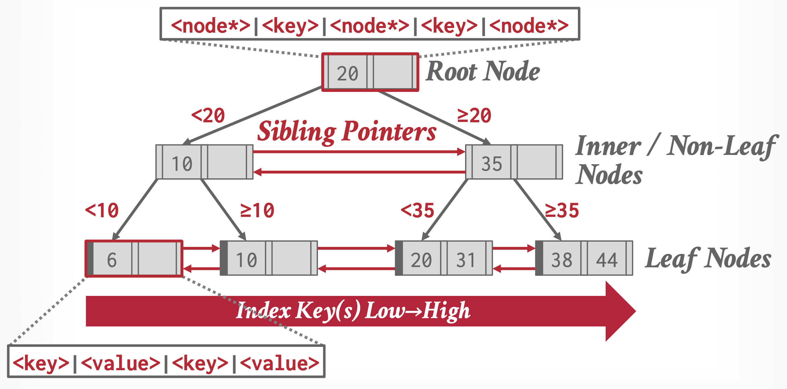 -
叶子节点的值也可以是记录的 ID，而且这种实现相当常见
- 对于叶子节点 \(L_i, L_j\ (i < j)\)（即 \(L_i\) 在 \(L_j\) 的左边
-
而 B+ 树的非叶子节点(nonleaf nodes)（有时也称为内部节点(internal nodes)）构成了叶子节点的多级（稀疏）索引
- 非叶子节点的结构和叶子节点的类似，只是它的指针指向的都是树内节点
- 每个非叶子节点（不包括根节点）的孩子数量的范围为 \([\lceil \dfrac{n}{2} \rceil, n]\)，而根节点孩子数量的范围为 \([2, n]\)
- 节点的指针数称为扇出(fanout)
- 假如某个节点包含 \(m (m \le n)\) 个指针，指针 \(P_i\) 指向搜索键值比 \(K_i\) 小而且不小于 \(K_{i-1}\) 的子树；指针 \(P_m\) 指向搜索键值不小于 \(K_{m-1}\) 的子树；指针 \(P_1\) 指向搜索键值比 \(K_1\) 小的子树
- 内部节点的 \(K_i\) 值为 \(P_{i+1}\) 所指子树的第一个叶子节点的第一个搜索键值
例子：B+ 数索引结构
\(n = 4\) 时的 B+ 树：
\(n = 6\) 时的 B+ 树：

前面假设的都是搜索键不重复的情况。如果有重复的搜索键，那么就需要调整一下结构的定义：
- 比如将 \(i < j\) 时 \(K_i < K_j\) 的条件改为 \(K_i \le K_j\) 这样就可以让叶子节点存储重复值了。但这样做会让内部节点也有重复的搜索键值，使得插入和删除操作变得极复杂又昂贵
- 另一种方法是为每个搜索键值用一组记录指针，但这种方法过于复杂，且使访问变得更加低效
- 其实大多数数据库的做法是再拿出一个主键 \(A_p\) 和搜索键属性 \(a_i\) 并起来，形成一个唯一的复合搜索键 \((a_i, A_p)\)
Quries⚓︎
下面是在 B+ 树的查询算法：
\begin{algorithm}
\caption{Querying a B+ Tree}
\begin{algorithmic}
\PROCEDURE{find}{$v$}
\STATE
\COMMENT{Assume no duplicate keys, and returns pointer to the record with}
\STATE
\COMMENT{search key value $v$ if such a record exists, and null otherwise}
\STATE Set $C$ = root node
\WHILE{($C$ is not a leaf node)}
\STATE Let $i$ = smallest number such that $v \le C.K_i$
\IF{there is no such number $i$}
\STATE $P_m$ = last non-null pointer in the node
\STATE Set $C = C.P_m$
\ELIF{($v = C.K_i$)}
\STATE Set $C = C.K_i$
\ELSE
\STATE Set $C = C.P_i$
\COMMENT{$v < C.K_i$}
\ENDIF
\ENDWHILE
\STATE
\COMMENT{$C$ is a leaf node}
\IF{for some $i$, $K_i = v$}
\RETURN $P_i$
\ELSE
\RETURN null
\COMMENT{No record with key value $v$ exists}
\ENDIF
\ENDPROCEDURE
\end{algorithmic}
\end{algorithm}
个人感觉还是比较好理解的，所以就不做解释了。
此外，我们还能在 B+ 树上查找特定范围 \([lb, ub]\) 内的搜索键值对应的记录，这样的查询称为范围查询(range queries)，对应的算法如下所示：
\begin{algorithm}
\caption{Range query on B+ tree}
\begin{algorithmic}
\PROCEDURE{findRange}{$lb, ub$}
\STATE
\COMMENT{Returns all records with search key value $V$ such that $lb \le V \le ub$}
\STATE Set resultSet = \{\}
\STATE Set $C$ = root node
\WHILE{($C$ is not a leaf node)}
\STATE Let $i$ = smallest number such that $lb \le C.K_i$
\IF{there is no such number $i$}
\STATE $P_m$ = last non-null pointer in the node
\STATE Set $C = C.P_m$
\ELIF{($lb = C.K_i$)}
\STATE Set $C = C.K_i$
\ELSE
\STATE Set $C = C.P_i$
\COMMENT{$lb < C.K_i$}
\ENDIF
\ENDWHILE
\STATE
\COMMENT{$C$ is a leaf node}
\STATE Let $i$ be the least value such that $K_i \ge lb$
\IF{there is no such $i$}
\STATE Set $i$ = 1 + number of keys in $C$
\COMMENT{To force move to next leaf}
\ENDIF
\STATE Set done = \FALSE
\WHILE{(not done)}
\STATE Let $n$ = number of keys in $C$
\IF{($i \le n$ \AND $C.K_i \le ub$)}
\STATE Add $C.P_i$ to resultSet
\STATE Set i = i + 1
\ELIF{($i \le n$ \AND $C.K_i > ub$)}
\STATE done = \TRUE
\ELIF{($i > n$ \AND $C.P_{n+1}$ is not null)}
\STATE Set $C = C.P_{n+1}$, and i = 1
\COMMENT{Move to next leaf}
\ELSE
\STATE Set done = \TRUE
\COMMENT{No more leaves to the right}
\ENDIF
\ENDWHILE
\RETURN resultSet
\ENDPROCEDURE
\end{algorithmic}
\end{algorithm}
该算法首先执行类似 \(find(lb)\) 的操作，找到起始的叶子节点；然后遍历叶子节点，将那些搜索键值在范围内的记录收集起来，直到发现搜索键值大于 \(ub\) 时，或者已经没有可遍历的记录时停止；最后返回收集起来的记录 \(resultSet\)。
现在我们来考虑一下查询 B+ 数索引的成本：
- 可以发现，如果一共有 \(N\) 个记录的话，那么 B+ 树的路径长度不超过 \(\lceil \log_{\lceil n/2 \rceil} N\rceil\)
- 一般情况下，节点大小和硬盘块的大小是一致的（大概在 4KB 左右）
- 相比一般的树状结构而言，B+ 树的每个节点都很大，所以 B+ 树长得又胖又矮
- 在遍历到最底层的叶子节点时，要查询唯一的搜索键值的话就需要一次额外的随机 I/O 访问
- 范围查询需要额外的成本，因为在到达叶子节点后，还要再检索范围内指针。假如要检索 \(M\) 个指针，那么需要访问至多 \(\lceil M / (n/2) \rceil + 1\) 个叶子节点。而且，对于二级索引而言，在最坏情况下会带来 \(M\) 次的随机 I/O 操作
对于非唯一搜索键，如果想要检索给定搜索键值 \(v\) 下的全部记录，那么可以利用过程 \(findRange(lb, ub)\)，其中 \(lb = (v, -\infty), ub = (v, \infty)\)，而 \(-\infty, \infty\) 分别指代最小和最大的主键值 \(A_p\)。
Updates⚓︎
我们可以将更新记录的过程拆解为：删除旧记录，之后再插入更新后的记录。
在 B+ 树中，插入和删除会更加麻烦，因为要在插入或删除后保留 B+ 树的平衡性，可能因插入后节点过大需要分裂(split) 开来，也有可能因删除后节点过小需要和其他节点合并(coalesce/merge)。这里先暂且不去考虑这些问题，让我们先来大致了解插入和删除的思路：
- 插入：使用 \(find()\) 函数找到插入的叶子节点的位置，然后将搜索键值插入，并确保叶子节点内的搜索键仍然有序
- 删除：也使用 \(find()\) 函数找到要被删除的搜索键值。若存在多个相同的搜索键值，则需要将它们全部找出来并删掉。删掉后还要将被删掉的搜索键值右边的项全部向左移，确保项之间没有空缺
下面详细介绍插入和删除的原理，以及算法。
Insertion⚓︎
为了方便理解，先来看些简单的例子。
例子
这是原来的 B+ 树：
插入 Adam 后的 B+ 树：
继续插入 Lamport 后的 B+ 树：
一组动画演示（两个不同的例子
动画演示 1
动画演示 2
插入操作可以概括为：
- 找到正确的叶子节点 \(L\)。
- 按顺序在 \(L\) 内插入新的项。
- 如果 \(L\) 有足够空间的话，插入操作就此结束。
- 否则（上溢(overflow)）将 \(L\) 分裂成 \(L\) 和 \(L_2\) 两个节点。将 \(L\) 中原有的项均匀分配到两个节点上，并将中间项复制给父节点。在 \(L\) 的父节点里面插入一个指向 \(L_2\) 的项。
- 如果要分裂内部节点的话，同样重新分配里面的项，不要忘记将中间项推到上一层的节点。
插入操作的算法如下所示：
\begin{algorithm}
\caption{Insertion of entry in a B+ tree}
\begin{algorithmic}
\PROCEDURE{insert}{$value\ K, pointer\ P$}
\IF{(tree is empty)}
\STATE create an empty leaf node $L$, which is also the root
\ELSE
\STATE Find the leaf node $L$ that should contain key value $K$
\ENDIF
\IF{($L$ has less than $n-1$ key values)}
\STATE insert\_in\_leaf($L, K, P$)
\ELSE
\STATE Create node $L'$
\STATE Copy $L.P_1, \dots, L.K_{n-1}$ to a block of memory $T$ that can
\STATE $\quad \quad$ hold $n$ (pointer, key-value) pairs
\STATE insert\_in\_leaf($T, K, P$)
\STATE Set $L'.P_n = L.P_n$; Set $L.P_n = L'$
\STATE Erase $L.P_1$ through $L.K_{n-1}$ from $L$
\STATE Copy $T.P_1$ through $L.K_{n-1}$ from $L$
\STATE Copy $T.P_{\lceil n / 2\rceil + 1}$ through $T.K_n$ from $T$ into $L'$ starting at $L'.P_1$
\STATE Let $K'$ be the smallest key-value in $L'$
\STATE insert\_in\_parent($L, K', L'$)
\ENDIF
\ENDPROCEDURE
\end{algorithmic}
\end{algorithm}
如果插入操作会导致节点分裂的话，那就要自底向上递归处理分裂的问题，直到没有节点分裂，或者创建了新的根节点为止。
该过程还用到了两个子过程 \(insert\_in\_leaf\) 和 \(insert\_in\_parent\)，算法如下：
\begin{algorithm}
\caption{Subsidiary procedures for insertion of entry in a B+ tree}
\begin{algorithmic}
\PROCEDURE{insertInLeaf}{$node\ L, value\ K, pointer\ P$}
\STATE
\COMMENT{Cannot use underlines in procedure names in pseudocode.js}
\IF{($K < L.K_1$)}
\STATE insert $P, K$ into $L$ just before $L.P_1$
\ELSE
\STATE Let $K_i$ be the highest value in $L$ that is less than or equal to $K$
\STATE Insert $P, K$ into $L$ just after $L.K_i$
\ENDIF
\ENDPROCEDURE
\STATE $\quad$
\STATE $\quad$
\PROCEDURE{insertInParent}{$node\ L, value\ K', node\ N'$}
\STATE
\COMMENT{Cannot use underlines in procedure names in pseudocode.js}
\IF{($N$ is the root of the tree)}
\STATE Create a new node $R$ containing $N, K, N'$
\COMMENT{$N, N'$ are pointers}
\STATE Make $R$ the root of the tree
\RETURN
\ENDIF
\STATE Let $P = parent(N)$
\IF{($P$ has less than $n$ pointers)}
\STATE Insert ($K', N'$) in $P$ just after $N$
\ELSE
\COMMENT{Split $P$}
\STATE Copy $P$ to a block of memory $T$ that can hold $P$ and $(K', N')$
\STATE Insert ($K', N'$) into $T$ just after $N$
\STATE Erase all entries from $P$; Create node $P'$
\STATE Copy $T.P_1, \dots, T.P_{\lceil (n+1) / 2 \rceil}$ into $P$
\STATE Let $K'' = T.K_{\lceil (n+1) / 2 \rceil}$
\STATE Copy $T.K_{\lceil (n+1) / 2 \rceil} \dots T.P_{n+1}$ into $P'$
\STATE insert\_in\_parent($P, K'', P'$)
\ENDIF
\ENDPROCEDURE
\end{algorithmic}
\end{algorithm}
Deletion⚓︎
同样为了便于理解，先来看这个例子：
例子
这是原来的 B+ 树：
删掉 Srinivasan 后的 B+ 树：

继续删掉 Singh 和 Wu 后的 B+ 树：

继续删掉 Gold 后的 B+ 树：
一组动画演示（两个不同的例子
动画演示 1

动画演示 2
删除操作的步骤如下：
- 找到正确的叶子节点 \(L\)。
- 移除指定的项。
- 如果 \(L\) 有一半还是满的话，删除操作到此为止。
- 否则（下溢(underflow)）需要先尝试和兄弟节点合并；如果合并失败的话（合并后项数超过节点容量）再重新分配(redistribute) 这两个节点（\(L\) 和兄弟节点）的内容（更准确的说法是从兄弟节点中“借”(borrow) 一个项过来
） 。
- 如果要合并的话，必须删除 \(L\) 父节点中指向 \(L\) 的那项。
下面展示了删除操作的算法：
\begin{algorithm}
\caption{Deletion of entry from a B+ tree}
\begin{algorithmic}
\PROCEDURE{delete}{$value\ K, pointer\ P$}
\STATE find the leaf node $L$ that contains $(K, P)$
\STATE delete\_entry($L, K, P$)
\ENDPROCEDURE
\STATE $\quad$
\STATE $\quad$
\PROCEDURE{deleteEntry}{$node\ N, value\ K', pointer\ P$}
\STATE delete($K, P$) from $N$
\IF{($N$ is the root \AND $N$ has only one remaining child)}
\STATE make the child of $N$ the new root of the tree and delete $N$
\ELIF{($N$ has too few values/pointers)}
\STATE Let $N'$ be the previous or next child of $parent(N)$
\STATE Let $K'$ be the value between pointers $N$ and $N'$ in $parent(N)$
\IF{(entries in $N$ and $N'$ can fit in a single node)}
\STATE
\COMMENT{Coalesce nodes}
\IF{($N$ is predecessor of $N'$)}
\STATE swap\_variables($N, N'$)
\ENDIF
\IF{($N$ is not a leaf)}
\STATE append $K'$ and all pointers and values in $N$ to $N'$
\ELSE
\STATE append all $(K_i, P_i)$ pairs in $N$ to $N'$; set $N'.P_n = N.P_n$
\ENDIF
\STATE delete\_entry($parent(N), K', N$); delete node $N$
\ELSE
\STATE
\COMMENT{Redistribution: borrow an entry from $N'$}
\IF{($N'$ is a predecessor of $N$)}
\IF{($N$ is a nonleaf node)}
\STATE let $m$ be such that $N'.P_m$ is the last pointer in $N'$
\STATE remove $(N'.K_{m-1}, N'.P_m)$ from $N'$
\STATE insert $(N'.P_m, K')$ as the first pointer and value in $N$,
\STATE $\quad \quad$ by shifting other pointers and values right
\STATE replace $K'$ in $parent(N)$ by $N'.K_{m-1}$
\ELSE
\STATE let $m$ be such that $(N'.P_m, N'.K_m)$ is the last pointer/value
\STATE $\quad \quad$ pair in $N'$
\STATE remove $(N'.P_m, N'.K_m)$ from $N'$
\STATE insert $(N'.P_m, N'.K_m)$ as the first pointer and value in $N$,
\STATE $\quad \quad$ by shifting other pointers and values right
\STATE replace $K'$ in $parent(N)$ by $N'.K_m$
\ENDIF
\ELSE
\STATE ... symmetric to the $\mathbf{if}$ case ...
\ENDIF
\ENDIF
\ENDIF
\ENDPROCEDURE
\end{algorithmic}
\end{algorithm}
Complexity⚓︎
尽管 B+ 树的插入和删除操作较为复杂，但是它们仅需相对较少的 I/O 操作，而且和树的高度成正比。
若已知记录数为 \(N\)，B+ 树节点最大指针数为 \(n\)（也就是说节点内最多可以放 \(n-1\) 个搜索键值
- 最好情况（每个节点都塞满
） ：\(H_{\min} = 1 + \lceil \log_n \lceil \dfrac{N}{n-1} \rceil \rceil\) - 最坏情况（根节点只有 2 个子树，其他节点只有最大扇出一半数量的子树
） ：\(H_{\max} = 2 + \lfloor \log_{\lceil n / 2 \rceil} \lceil \dfrac{1}{2} \cdot \dfrac{N}{(n-1) / 2} \rceil \rfloor\)
虽然 B+ 树仅能保证节点中至少有一半是满的（根据定义
例子
答案由 Gemini 2.5 pro 生成，且经过笔者验证。
答案：A
我们需要先确定 B+ 树的阶数（或扇出率
-
计算内部节点的阶数 (p)
一个内部节点包含
p-1个键值和p个指针。其大小必须小于等于节点大小。\[(p-1) \times 32B + p \times 8B \le 2048B\]\[32p - 32 + 8p \le 2048\]\[40p \le 2080\]\[p \le 52\]所以，内部节点的阶数（最大扇出）为 52。
-
计算叶子节点能容纳的条目数 (k)
一个叶子节点包含多个
(键值, 记录指针)对，以及一个指向下一个叶子节点的指针。\[k \times (32B + 8B) + 8B \le 2048B\]\[40k \le 2040\]\[k \le 51\]所以，一个叶子节点最多能容纳 51 个索引条目。
-
计算树的高度 (h)
-
叶子节点数量:
总记录数 / 每个叶子节点的条目数=20,000 / 51≈ 392.15。因此，至少需要 393 个叶子节点。 -
确定高度: 设树高为
h，根节点为第 1 层。第h层的节点数（叶子节点数）必须大于等于 393。- 如果 h=2，最多有
52个叶子节点，52 < 393，不够。 - 如果 h=3，最多有
52 * 52 = 2704个叶子节点，2704 > 393，足够。
- 如果 h=2，最多有
-
因此，B+ 树的高度 h = 3。
-
注意
Gemini 只讨论了最理想的情况。我们还得考虑最坏情况——可以直接拿例子上面的公式计算：
总开销 = 索引查询开销 + 数据块读取开销
-
索引查询开销
- 要到达叶子节点，需要从根节点开始，逐层向下访问。树的高度为 3，所以需要读取 3 个节点（根节点、1 个中间节点、1 个叶子节点
） 。 - 每次读取一个新节点都需要一次
seek。 - 开销 : 3 seek + 3 transfer
- 要到达叶子节点，需要从根节点开始，逐层向下访问。树的高度为 3，所以需要读取 3 个节点（根节点、1 个中间节点、1 个叶子节点
-
数据块读取开销
- 因为这是聚集索引，所以索引项指向的数据记录在物理上是连续存储的。
- 题目告知结果包含在 5 个数据块中。由于数据连续，我们只需要一次
seek来定位到第一个数据块，然后就可以顺序读取这 5 个块。 - 开销 : 1 seek + 5 transfer
-
总开销
- Total Seek:
3 (for index) + 1 (for data) = 4 seek - Total Transfer:
3 (for index) + 5 (for data) = 8 transfer
- Total Seek:
最终的开销为 4 seek + 8 transfer。
Nonunique Search Keys⚓︎
事实上，前面我们假设了搜索键值都是唯一的。而对于非唯一的搜索键，我们也了解了一种通过创建复合搜索键来使搜索键变得唯一的方法。通过修改 B+ 树的结构，能够让 B+ 树支持重复搜索键的查找、插入和删除操作，具体来说有以下几种方法：
-
每个搜索键值仅存储一次，并为每个搜索键值保留一个记录指针的桶（或列表
） ，以处理非唯一的搜索键。这种方法能够有效利用空间，但是它使得 B+ 树的实现更为复杂，因为桶是变长的，且随叶子节点的变大而变大；而且如果将桶放在不同的硬盘块里，那么还会产生额外的 I/O 操作时间。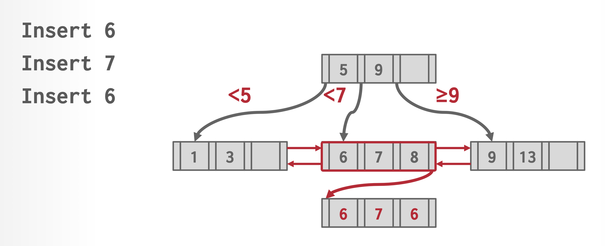 -
对每个记录只存储一次搜索键值。该方法能让分裂叶子节点操作保持不变。但它让分裂和查找中间节点的操作变得相当复杂，因为两个叶子可能会包含相同的搜索键值；且会带来更高的空间开销。
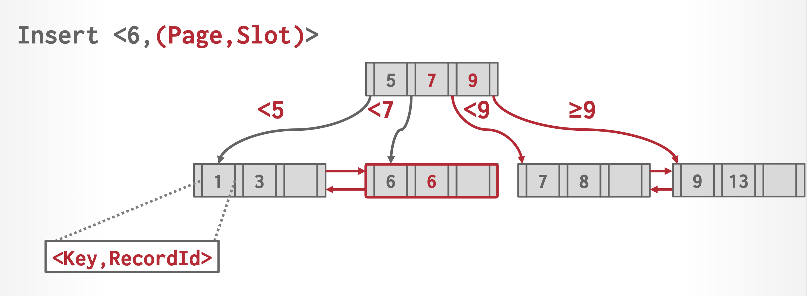
而这两种方法的共同缺点是：影响了记录删除的效率，在最坏情况下删除的复杂度与记录数呈线性关系。而在搜索键是唯一的情况下时，记录删除在最坏情况下的复杂度与记录数呈对数关系。
因此，在大多数数据库系统中，B+ 树实现仅用于处理唯一的搜索键，且会通过自动增加记录 id 或别的属性来使搜索键变得唯一。
B+ Tree Extension⚓︎
B+ Tree File Organization⚓︎
前面介绍过索引顺序文件组织的主要缺点：随文件规模增长，性能不断降低。因此，我们将 B+ 树直接作用在文件上来解决这一问题。具体来说，就是将文件中的真实记录存储在 B+ 树的叶子节点上，我们称这样的文件组织为 B+ 树文件组织(B+ tree file organization)。由于记录通常比指针大，因此能被存储在叶子节点内的记录的最大数量比非叶子节点的指针数量更少；可即便如此，我们仍然要求叶子节点有一半内容是满的。一种 B+ 树文件组织如下所示：

B+ 树文件组织的插入和删除操作和前面介绍过的方法无异，故不再赘述。
在使用 B+ 树文件组织时，空间利用尤为重要，因为一条记录占据的空间远比一个搜索键或指针来的大。我们可以通过在分裂或合并时的重分配 (redistribution) 操作中考虑更多的兄弟节点来提升空间的利用，这种方法在叶子节点和非叶子节点上均可行。总的来说，如果在重分配时考虑到 \(m\) 个节点（\(m - 1\) 个兄弟节点
注意到无论是在 B+ 树索引结构还是文件组织中，相邻的叶子节点有可能位于硬盘的不同位置上。尽管在一组新的记录上建立 B+ 树时考虑到为相邻的叶子节点分配连续的硬盘块，但是在多次插入和删除操作后，这里的有序性就会被打破，从而导致硬盘访问时间的增加。因此可能需要通过重构来恢复这个有序性。
B+ 树文件组织可以用于存储大对象（比如 SQL 的 clobs 和 blobs
Secondary Indices and Record Relocation⚓︎
对于 B+ 树这样的文件组织，有时会遇到即使没有更新记录内容，也会导致记录位置被改变的情况。比如 B+ 树的某个叶子节点发生分裂了，那么就会有一些记录被移动到新的节点上，这时所有存储指向这些被移动过的记录的指针的二级索引就要被更新，即使它们对应的记录内容没有发生改变，而这会带来较大的开销。
为了解决这一问题，在二级索引中，我们不再存储指向这些被索引记录的指针，而是存储一级索引的搜索键属性（就是说上层的索引不要存最底层的记录，只要存下一层的索引就行了
Indexing Strings⚓︎
为字符串属性创建 B+ 树索引会有一些问题，下面列出这些问题以及对应的解决方案：
- 字符串可能是变长的
- 解决方案
： （没看懂课本的做法，貌似还是正常的分裂和合并？ ）
- 解决方案
- 字符串可能会很长，导致节点的低扇出，从而让 B+ 树变得很高
- 解决方案：通过前缀压缩(prefix compression)（仅存储搜索键值的前缀部分，但足以区分搜索键值）提升扇出
Bulk Loading of B+ Tree Indices⚓︎
批量加载(bulk loading) 是指一次向索引插入多个项的操作。一种实现方法是：
- 创建一个包含关系中的索引项的临时文件
- 然后按搜索键为文件内容排序（后面会介绍一些高效的排序算法）
- 这样做的好处是：如果按排好的顺序插入项的话，那么这些项也是连续进入某个节点的，那么只需要向该节点写入一次即可。
- 如果 B+ 树是空的话，那么所有节点仅需一次写入即可。具体来说，可通过自底向上(bottom-up) 的 B+ 树构造实现更快的构造。大多数数据库系统都会用到排序和自底向上构造的技术。
- 扫描排好序的文件，将项插入到索引中
Design Choice⚓︎
在 B+ 树的设计中，我们需要考虑以下因素：
- 节点大小
- 存储设备的速度越慢，对应的 B+ 树最优节点大小越大
- HDD：~1 MB
- SSD：~10 KB
- 内存：~512 B
- 最优大小还取决于工作量，比如叶子节点的扫描和从根节点到叶子结点的遍历所需的节点大小不同
- 存储设备的速度越慢，对应的 B+ 树最优节点大小越大
- 合并阈值(merge threshold)
- 有些 DBMS 在节点内容低于一半时不会进行合并操作
- B+ 树节点内的平均占据率为 69%
- 延迟更新操作能够减少重新组织的量
- 或者也可以让小节点存在，然后周期性地重新组织整棵树
- 有些 DBMS 在节点内容低于一半时不会进行合并操作
- 变长键(variable-length keys)，包括以下方法：
- 指针：将指向元组属性的指针作为键存储起来，可节省空间但影响效率（这样的树也称为 T 树 (T-trees)）
- 变长节点：索引中的节点大小是可变的，需要谨慎的内存管理，所以一般不会用这种方法
- 填充：总是将键填充至该键类型的最大长度，但会造成很大的空间浪费，所以一般也不会用
- 键映射 / 间接引用：将映射到键值列表的指针数组嵌入到节点中，不仅能节省空间，有时还可以加快查询速度
- 节点内搜索(intra-node search)
- 线性搜索：
- 从头到尾扫描节点内的键，无需担心排序问题，使得插入和删除更快；但时间复杂度为 \(O(n)\)，效率不高
- 可通过 SIMD 指令实现向量化
- 二分搜索：跳至中间键，根据比较结果选择左侧或右侧节点进行下一步的比较，效率更高（时间复杂度 \(O(\log n)\)
） ；但插入操作的成本会更大，因为我们必须要维护节点的顺序 - 插值搜索：基于已知的键的分布（利用节点内的元数据
） ，估计目标键的位置。虽然这是最快的方法，但应用场景很少
- 线性搜索：
Optimizations⚓︎
设计 B+ 树时还可以考虑以下优化方案：
-
前缀压缩(prefix compression)
- 相同叶子节点内（排好序）的键可能有相同的前缀
- 在这种情况下，我们就不存储完整的键，而是先提取共同的前缀，然后为每个键存储唯一的后缀
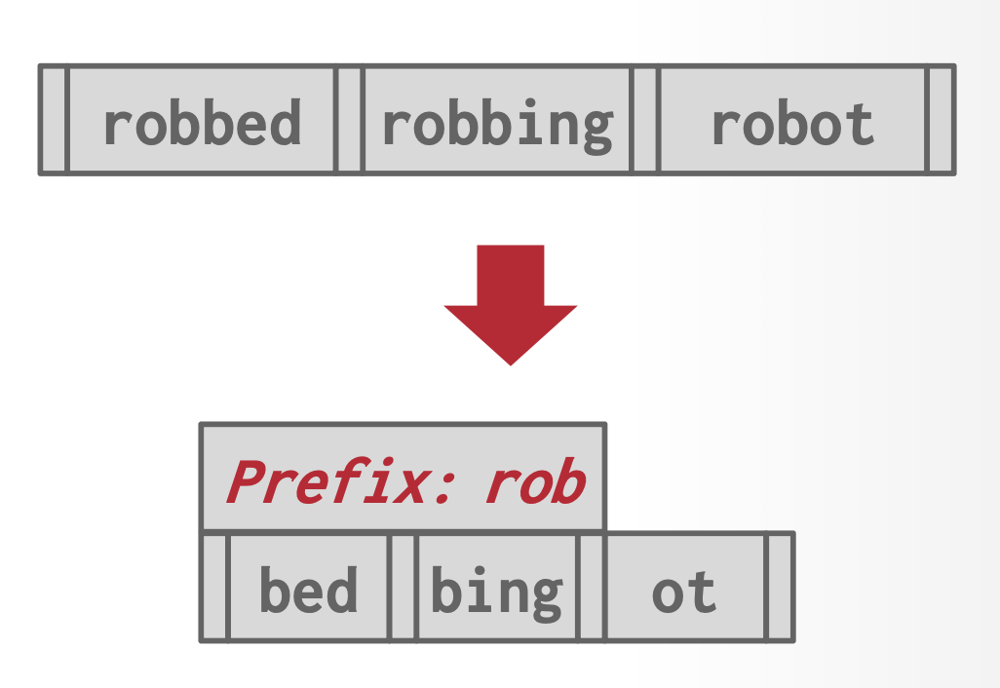 -
去重(deduplication)
- 如果存在不唯一索引，那么就可能会有某个叶子节点存储一个键的多份拷贝的情况
- 此时叶子结点可以仅存储其中一份拷贝，但需要维护一个由包含该键的元组构成的“文档列表 (posting list)”（类似哈希表）
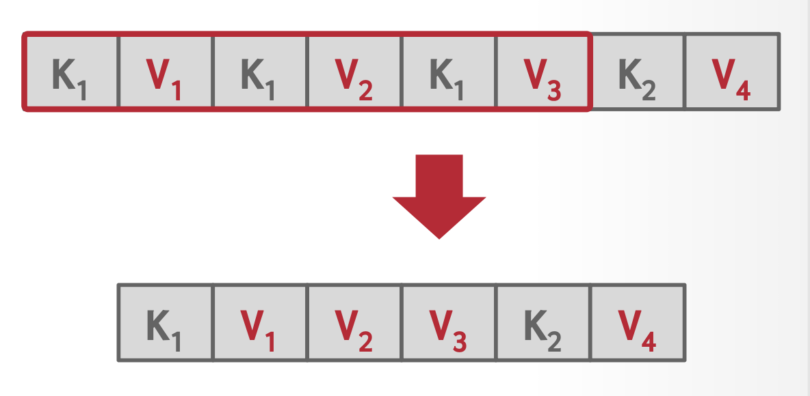 -
后缀截断(suffix truncation)
- 内部节点中的键仅用于“引导流量”
- 所以内部节点仅存储需要的最小前缀，仍然确保正确的引导

-
指针混编(pointer swizzling)
- 节点使用页 id，以引用其他索引的节点。DBMS 在遍历时必须从页表中获取相应的内存位置
- 如果要找的页被钉在缓存池中，那么就要存储原始指针而非页 id，避免从页表中查找地址
例子
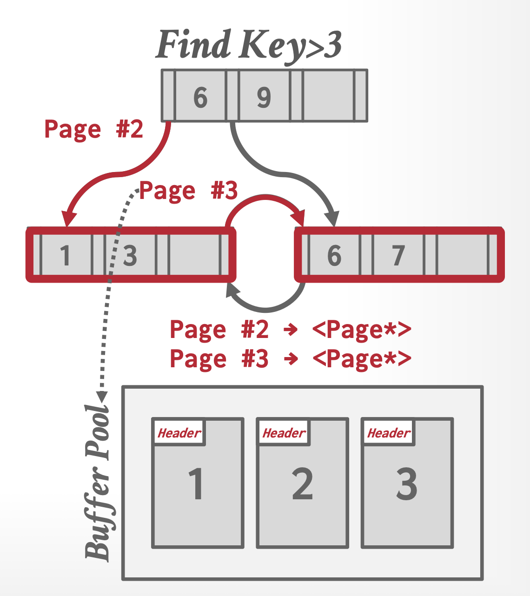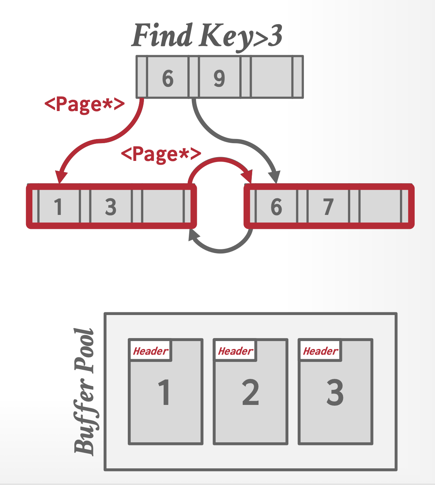可以看到，现在我们就无需访问缓存池就可以知道页的地址了！
-
批量插入(bulk insert)：构建一棵新的 B+ 树的最快方法是先对键排序，然后自底向上构建索引
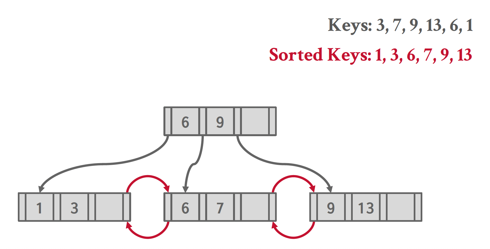
B Tree Index Files⚓︎
B 树索引和 B+ 树索引类似，但主要的区别是 B 树消除了搜索键值的存储冗余，也就是说每个搜索键值在 B 树中仅出现一次（如果搜索键值是唯一的话

下面两张图分别展示了 B 树的叶子节点（图 a）和非叶子节点（图 b）的结构：
在非叶子节点中，\(P_i\) 表示树指针，\(B_i\) 表示桶或文件记录指针。在一般的 B 树中，叶子节点里有 \(n-1\) 个键，非叶子节点里有 \(m-1\) 个键，其中 \(m < n\)。
在 B 树上进行查找时，有时我们可能在到达叶子节点前就找到了想要找的值。但是由于非叶子节点上的搜索键数量相比 B+ 树更少，即有更少的扇出，所以 B 树会比（存储相同内容的） B+ 树更高。总的来说 B 树上的查找时间和搜索键数量的对数呈正比。
B 树的删除操作更为复杂，因为被删除的项还可能会出现在非叶子节点上。具体来说，如果搜索键 \(K_i\) 被删掉的话，那么出现在 \(P_{i+1}\) 所指向的子树中最小的搜索键必须被移动到原来被 \(K_i\) 占据的地方。相对而言，插入操作只是变得略微复杂些。
对于更大规模的索引，B 树的空间优势没法显现出来。因此大多数的数据库系统还是采用 B+ 树。
Indexing on Flash Storage⚓︎
前面的介绍中，我们都是假设数据被存储在硬盘中——现在我们来看一下将索引用于闪存或 SSD 的情况。
- B+ 树的节点大小和闪存页的大小相匹配
- 前面介绍过的批量加载和自底向上构建的方法仍然适用于 SSD 中，且仍然能发挥不错的效果。对于后者，它还能减少页的写操作（之前介绍过，闪存的写操作比较复杂
） ，从而能显著提升性能 - 为了降低闪存的擦除次数，一种方法是为 B+ 树的内部节点添加缓冲区，用于临时记录更新情况，之后将更新操作下传到更低层的节点上；另一种方法是创建多棵树，并将它们合并起来
Indexing in Main Memory⚓︎
当然也可以对在内存中的数据进行索引！
- 如果 B+ 书的节点小到能够放在一个高速缓存行里，那么会为在内存中的数据带来更好的性能，因为这样的 B+ 树能让索引操作遇到的高速缓存失效的情况更少
Hash Indices⚓︎
哈希(hashing) 是一种在内存中建立索引的常用技术，这样的索引可能被临时用于连接操作或作为主存数据库的永久结构。哈希也能够用于组织文件内的记录，尽管实际上用的不多。下面我们仅关注在内存中的哈希索引。
哈希表 (hash tables)
- 哈希表实现了一种关联数组（键 -> 值）的抽象数据类型，里面的内容是无序的
- 访问哈希表的平均时间复杂度为 \(O(1)\)（最坏情况下的时间复杂度为 \(O(n)\)
） ，空间复杂度为 \(O(n)\)- 虽然看起来只有 \(O(1)\)，但在现实情况下我们不能忽视常数的影响
- 哈希表的实现包含以下部分：
- 哈希函数(hash functions)：实现了将一个较大的键空间映射到一个较小的域内，用于计算数组（桶或槽）的索引位置。
- 在选择哈希函数时，我们需要权衡速度与冲突概率（即两个键被映射到同一槽位的情况
） 。 - 在极端情况下，一个总是返回相同值的哈希函数虽然速度极快，但会导致持续的冲突；而另一个极端是 " 完美 " 哈希函数虽能完全避免冲突，但其计算速度过于缓慢。所以最好的方案是介于两者之间的——在保持较快运算速度的同时实现较低的冲突率。
- 这里我们不会考虑用于密码学的安全哈希函数，因为这样的哈希函数是在 DBMS 内部实现的，我们无需担心信息泄露的问题。
- 在选择哈希函数时，我们需要权衡速度与冲突概率（即两个键被映射到同一槽位的情况
- 哈希方案(hash schemes)：处理哈希后冲突的方法。我们需要权衡好通过分配更大的哈希表以减少冲突，和冲突发生时执行额外操作这两种方案。
- 哈希函数(hash functions)：实现了将一个较大的键空间映射到一个较小的域内，用于计算数组（桶或槽）的索引位置。
在哈希中，我们用桶(bucket) 来指代一个存储单条或多条记录的存储单元，它一般是一个关于索引项或记录（用于哈希文件组织(hash file organization) 中）的链表。形式上，我们用 \(K\) 表示所有搜索键值的集合，\(B\) 表示所有桶地址的集合，那么哈希函数(hash function) \(h\) 就是一个从 \(K\) 到 \(B\) 的一个函数。这个桶集合实际上是一个指针数组，每个指针存储的是链表（桶）的头。
要想插入一条搜索键值为 \(K_i\) 的记录，我们先计算 \(h(K_i)\)，得到该记录对应的桶地址，然后我们将这条记录的索引项加到偏移量为 \(i\) 的列表上。这种方法称为溢出链(overflow chaining)，有时也称为闭寻址(closed addressing)。也有一种开寻址的方法，但不适合用于数据库的索引中，因为开寻址不支持高效的删除操作。
哈希索引支持对搜索键的相等性查询（比一比哈希函数值就行了
对于插入操作，如果桶没有足够多的空间的话，那么就发生了桶溢出(bucket overflow) 的问题，这时就要用溢出桶(overflow buckets) 来解决这一问题。具体来说：如果记录必须要被插入到桶 \(b\)，而 \(b\) 是满的话，那么系统将为 \(b\) 提供一个溢出桶，然后将记录插入到这个溢出桶里。如果溢出桶也满的话，那么系统就会再提供一个溢出桶，以此类推。这些溢出桶用一个链表连接起来，就得到了前面提到的溢出链，如下所示：

如果我们能够提前知道需要被索引的记录数量的话，那么我们就能分配足够大的桶，从而避免了桶溢出的问题。
当多个记录对应的搜索键值相等时，就会导致记录（在所有桶的）分布的不均匀（或称为偏斜(skew)
为了减小桶溢出的概率，我们让桶的数量为 \(\dfrac{n_r}{f_r} \cdot (1 + d)\)，其中 \(n_r\) 为记录总数，\(f_r\) 为每个桶的记录数量，\(d\) 是一个任意数值 (fudge factor)，通常设为 0.2 左右。此时桶内 20% 的空间是空的，虽然看起来有些浪费空间，但它能够减少桶溢出的发生。
前面介绍的哈希索引都是固定桶数的，这种哈希称为静态哈希(static hashing)，它有一个问题：我们需要知道有多少记录被存储在索引里，否则的话桶的容量可能不太够用。为了解决这个问题，当记录量大到一定程度时就要重构哈希索引，增加桶的数量，但这样做会耗费不少时间。像这种能够让桶的数量增长的哈希称为动态哈希(dynamic hashing)，线性哈希(linear hashing) 和可扩展哈希(extendable hashing) 都属于此类。
更多的哈希方案！
这一部分属于进阶内容，这里只是稍微带过一下，感兴趣的读者可以自行查阅资料了解。下面将根据静态和动态之分来列举一些常见的方案：
-
静态哈希方案
-
线性探测哈希(linear probe hashing)：见我的 FDS 笔记，里面还讲了一些更进阶的算法
动画演示
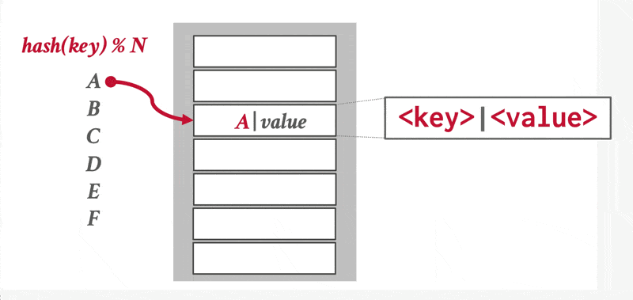 -
布谷鸟哈希(cuckoo hashing)：使用多个哈希函数，在哈希表上找到多个可插入的位置
动画演示
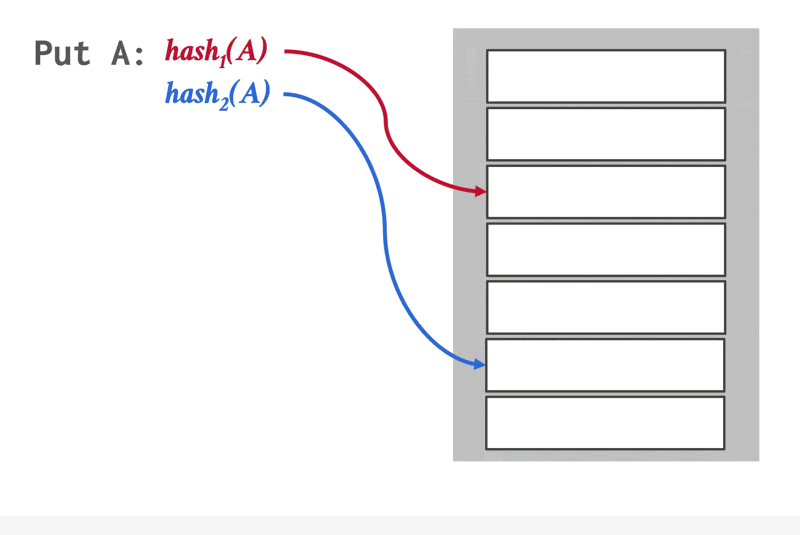- 在插入前，检查这些位置上是否是空的，然后从空位置上挑一个放进去
- 如果没有空位置，就驱逐其中一个位置上的元素，然后重新哈希，找到新位置
- 此时查找和删除的时间复杂度均为 \(O(1)\)
-
-
动态哈希方案
-
链哈希(chained hashing)：就是正文部分主要介绍的哈希方案，这里就不展开介绍了
动画演示
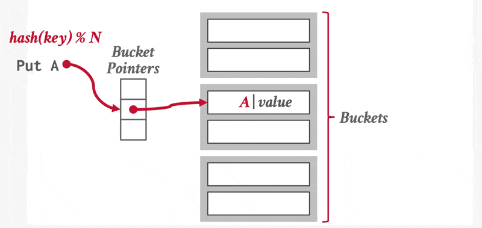 -
可扩展哈希(extendible hashing)：链哈希的一种变体，能使哈希表中多个槽位指向相同的桶链。背后的思想是：分裂并移动桶的内容，并增加查找哈希表中条目时需要检查的位数。
动画演示
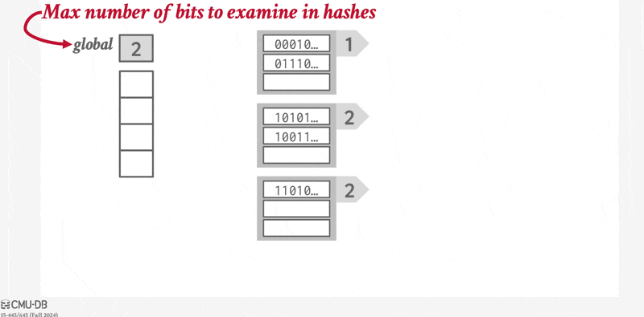 -
线性哈希(linear hashing)：
- 哈希表维护一个跟踪下一个要分裂的桶的指针；当任意桶出现溢出时，就分裂这个指针指向的桶。
- 使用多重哈希，为给定的键找到正确的桶
- 可采用不同的溢出处理方法
动画演示
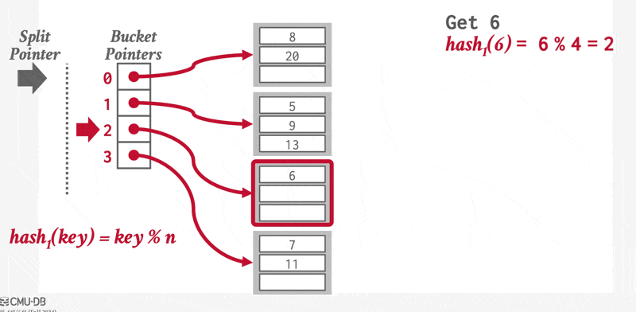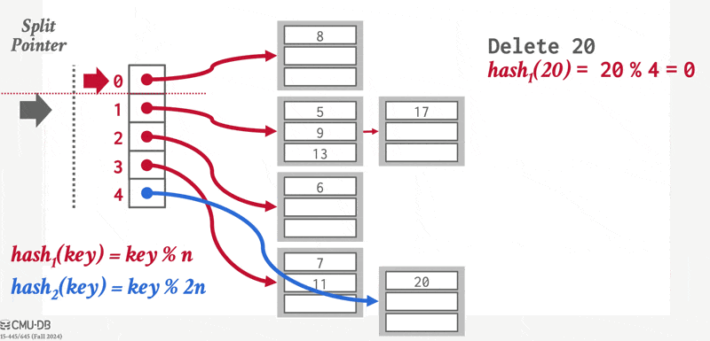
-
Multiple-Key Access⚓︎
前面讲到的搜索键大多是由单个属性构成的，而对于由多个属性构成的搜索键，我们称为复合搜索键(composite search keys)。假如对属性 \(A_1, \dots, A_n\) 索引，那么搜索键值可以被表示为 \((a_1, \dots, a_n)\) 的元组形式。此时搜索键值的顺序遵循词典序(lexicographic ordering)。
对于某些查询，使用复合搜索键构成的索引能够提升查询效率。比如对于以下查询：
我们创建复合搜索键 \((dept\_name, salary)\)，并在其基础上建立起有序索引（比如 B+ 树索引
实际上，上述复合搜索键还适用一个为相等条件，一个为范围条件的查询，以及单属性的查询，比如：
SELECT ID
FROM instructor
WHERE dept_name = 'Finance' AND salary < 80000;
SELECT ID
FROM instructor
WHERE dept_name = 'Finance';
但这种搜索键不适用于两个属性均为范围条件的查询，比如：
因为满足条件的这些记录可能位于不同的硬盘块内，而文件内的记录是有序的，因此会带来很多的 I/O 操作。
覆盖索引(covering indices)：存储某些属性（并非搜索键属性）以及指向记录的指针的索引。使用这种索引能够减小搜索键的规模，从而为非叶子节点带来更大的删除，降低索引树的高度。
Indices in SQL⚓︎
-
虽然 SQL 标准里没有指明任何和索引相关的语法，但大多数的数据库支持用 SQL 命令创建和删除索引，语法格式大致如下：
-
如果想要将候选键作为搜索键的话，可以用
CREATE UNIQUE INDEX来实现。 - 当用户发起的查询能够从索引中获利的话，那么 SQL 查询处理器会自动使用该索引。
- 对那些在查询语句中作为选择条件或连接条件的属性而言，索引会很有帮助，因为它能够显著减少查询的成本。
- 然而，如果创建太多的索引的话，就会降低更新的处理，因为更新操作也会涉及到所有受影响的索引，所以在创建索引前要先想好是否有必要用到这个索引。
- 如果某个关系有主键的话，那么大多数数据库系统会自动根据主键创建索引，如果不这么做的话，当插入元组的时候，整个关系都要被扫描一遍，以确保主键约束是满足的。
- 通常，为外键属性创建索引是一个好主意，因为大多数的连接操作都是在外键索引和主键索引属性上进行的，对这种情况而言查询的效率会因为索引而变得更高。
Write-Optimized Index Structure⚓︎
B+ 树索引结构的一大缺点是随机的写操作对性能带来了负面影响。在 SSD 上，虽然随机 I/O 操作相当快，但写操作的成本还是很大。因此，我们接下来会介绍一些写优化的索引结构，来处理高写入 / 插入率带来的工作量。
LSM Trees⚓︎
LSM 树，全称日志结构合并树(log-structured merge tree)，是由多棵 B+ 树构成的，包括一棵在内存里的树 \(L_0\)，以及在硬盘里的树 \(L_1, L_2, \dots, L_k\) 构成的，其中 \(k\) 称为层级。下图展示了 \(k=3\) 时的 LSM 树：
- 索引的查找过程为：先对每棵树进行单独的查找操作，然后合并查找结果。
- 向 LSM 树插入一条记录时，
- 首先将该记录插入到在内存中的 \(L_0\)（系统为其分配了相当大的内存空间
） 。如果内存空间已满的话，那么就要将数据从内存移到硬盘里的 B+ 树上。 - 具体来说，如果 \(L_1\) 是空的话，那么就将整个 \(L_0\) 写入到 \(L_1\) 上；否则的话，按键的升序扫描 \(L_0\) 的叶子层级，然后将里面的项和 \(L_1\) 的叶子层级里的项合并起来（同样需要扫描
） 。然后用自底向上的构建方法，根据合并后的项来创建新的 B+ 树，用这棵新的树替代旧的 \(L_1\)。 - 上述方法的好处是能确保新树的叶子节点是顺序定位的，以避免随机 I/O 操作；同时确保叶子是满的，减少了空间开销。
- 但拷贝树需要不小的成本，所以这里介绍一些降低成本的方法：
- 使用多级树，其中树 \(L_{i+1}\) 的最大容量是 \(L_i\) 的 \(k\) 倍，因此每个记录之多被写入 \(k\) 次。级数和 \(\log_k (I/M)\) 成正比，其中 \(I\) 是总项数，\(M\) 是 \(L_0\) 的项数
- 除了 \(L_0\) 外，每级树都有至多 \(b\) 棵树（原来只有 1 棵树
） ，这种变体称为按步合并索引(stepped-merge index)，它能够显著降低插入成本，但增加了查询成本
- 首先将该记录插入到在内存中的 \(L_0\)（系统为其分配了相当大的内存空间
- 删除操作中除了找到并删除索引项外，还要插入一个删除项(deletion entry)，用于表明哪个索引项被删掉了。插入删除项的过程和插入一个普通索引项的过程是相同的。
- 所以查找操作就要多出一步了：如果某些项存在删除项，那么在查找指定搜索键时需要同时找到原来的索引项以及删除项。如果发现删除项的话，那么就不返回原来的索引项。
- 更新操作和删除类似，也要插入一个更新项。更新在合并操作中完成。
Buffer Trees⚓︎
缓冲区树是在 B+ 树的基础上，让每个内部节点（包括根节点）都有一个关联的缓冲区。节点的结构如下所示：

- 插入：
- 在插入索引记录时，不是先遍历叶子节点，而是先将其插入到根节点的缓冲区中
- 如果缓冲区满了的话，那么缓冲区内的每个索引记录被推向下一级合适的孩子节点的缓冲区内，以此类推
- 在被向下推之前，所有在缓冲区内的记录都是按搜索键排好序的
- 如果下一级节点是叶子节点的话，那么索引记录就按正常方法插入到叶子节点中就行了
- 如果叶子节点满了的话就执行分裂操作，此时有可能会让内部节点分裂，对应的缓冲区同样需要分裂
- 查找：
- 相比普通的 B+ 树查找，多了这样一步：在遍历内部节点时，检查一下节点的缓冲区内是否有要查找的搜索键值
- 范围查找同样适用
- 删除和更新：
- 和 LSM 树类似，也要插入删除项和更新项
- 也可以使用一般的 B+ 树算法，但这样会带来更大的 I/O 成本
在最坏情况下，缓冲区树在 I/O 运算次数的上界会比 LSM 树更低。且对于读操作而言，缓冲区树会比 LSM 树快不少。然而对于写操作而言，缓冲区树的表现更差，因为它要求更多的随机 I/O，因此花费更多的寻道时间。因此当写操作更多时，优先使用 LSM 树；当读操作更多时，优先使用缓冲区树。
B\(\varepsilon\)-Trees⚓︎
我们不立即对 B+ 树更新，而是将更新存储在内部节点对应键值项的日志缓存中。这样的树称为分形树(fractal trees) 或 \(B\varepsilon\) 树。当缓冲区填满时，更新会逐步向下级节点增量式地传递。
动画演示
Bitmap Indices⚓︎
位图索引(bitmap indices) 是一类适用于对多个键的简单查询的索引。在使用位图索引前，需要为关系中的每条记录标号（从 0 开始
位图(bitmap) 就是一组位，对于关系 \(r\) 的属性 \(A\)，位图索引包含了 \(A\) 可取的每个值，而位的数量对应记录的数量。对于某个值 \(v_j\) 的位图，如果编号为 \(i\) 的记录的属性值为 \(v_j\)，那么该位图的第 \(i\) 位置 1，否则置 0。
下面就是一个位图索引的例子：
例子
对于以下查询：
我们找到 \(gender\) 属性值为 f，以及 \(income\_level\) 属性值为 L2 的位图，然后对这两个位图进行交(intersection) 运算（实际上是一个逻辑与的运算
评论区